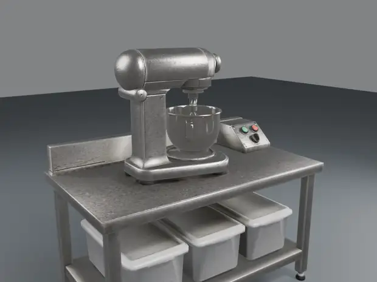

Station de mélange
mixing_stationNouveauil y a 7 minDarkRP Reborn · atelier
Les objets du futur système de drogue, de l'idée jusqu'au jeu. La page se met à jour toute seule chaque heure.

Dernier objet sorti de Blender
Rendu il y a 12 min. Chaque objet passe par quatre étapes : une image de concept, une première forme en 3D, une retouche complète dans Blender (forme, textures, pièces qui bougent), puis l'import et les tests dans le jeu.
Voir ses étapesmixing_stationNouveauil y a 7 minpackaging_tableNouveauil y a 22 minstash_boxNouveauil y a 50 mingrow_lamp_ledNouveauil y a 52 minsupply_crateNouveauil y a 53 mingrow_lamp_hpsNouveauil y a 58 mincash_stackil y a 1 hweed_drying_rackil y a 1 hdigital_scaleil y a 1 hweed_soil_bagil y a 1 hweed_nutrient_bottleil y a 1 hweed_trimmersil y a 1 hweed_plant_matureil y a 1 hwatering_canil y a 1 hweed_plant_youngil y a 2 hglass_jaril y a 2 hzip_baggieil y a 2 hweed_grow_potil y a 2 hlab_ovenil y a 3 h_matlible 01/01watering_can_prole 01/01En cours · il y a 22 min